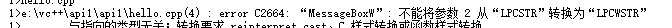

<!DOCTYPE html><html lang="null"><head><meta http-equiv="content-type" content="text/html; charset=utf-8"><meta content="width=device-width, initial-scale=1.0, maximum-scale=1.0, user-scalable=0" name="viewport"><meta content="yes" name="apple-mobile-web-app-capable"><meta content="black-translucent" name="apple-mobile-web-app-status-bar-style"><meta content="telephone=no" name="format-detection"><meta name="renderer" content="webkit"><title>走进Windows的API - 土豆儿的博客</title><meta name="description" content="API函数是Windows提供给应用程序的编程接口，任何用户应用程序都必须运行在API函数之上。直接使用API编程式了解操作系统运行细节的最佳方式。为什么要使用Windows API来做编程呢？因为我们在进行文件操作或是内存操作时，最后都是通过内核来提供相应的功能实现的，也就是说如果我们用标准库函数"><link type="text/css" rel="stylesheet" href="/css/basic.css?v=0.0.0"><link type="text/css" rel="stylesheet" href="/css/pure.css?v=0.0.0"><link type="text/css" rel="stylesheet" href="/css/style.css?v=0.0.0"><script type="text/javascript" src="//cdn.bootcss.com/jquery/1.11.0/jquery.min.js"></script></head></html><body><div class="body_container"><div id="header"><div class="site-name"><h1 class="hidden">走进Windows的API</h1><a id="logo" href="/.">土豆儿的博客</a></div><div id="nav-menu"><div class="bitcron_nav"><div class="site_nav_wrap"><div class="site_nav"><span class="a_container"><a href="/." class="selected active current">首页</a></span><span class="a_container"><a href="/archives/">归档</a></span></div></div></div></div></div><div id="layout" class="pure-g"><div class="pure-u-1 pure-u-md-3-4"><div class="content_container"><div class="post"><h1 class="post-title">走进Windows的API</h1><div class="post-meta">Jul 11, 2017<script src="https://dn-lbstatics.qbox.me/busuanzi/2.3/busuanzi.pure.mini.js" type="text/javascript"></script><span class="meta-space">  |  </span><span id="busuanzi_container_page_pv"><span id="busuanzi_value_page_pv"></span><span> 浏览</span></span></div><div class="post-content"><p>API函数是Windows提供给应用程序的编程接口，任何用户应用程序都必须运行在API函数之上。直接使用API编程式了解操作系统运行细节的最佳方式。<br>为什么要使用Windows API来做编程呢？因为我们在进行文件操作或是内存操作时，最后都是通过内核来提供相应的功能实现的，也就是说如果我们用标准库函数来写，最后还是要去请求内核来实现，但是直接调用内核API就相当于少走了“弯路”。因此使用API进行编程，速度要快得多。<br>初学者往往在知道API的用法，却不知道如何去使用，这是因为对于C++的了解不够，不清楚框架程序的工作机制。在进行学习之前，简单了解框架机制，熟悉Windows编程语言，有助于理解。并且要多练习程序的编写，在编写当中得到的理解会更深刻一些。</p>
<hr>
<h2 id="简单介绍一个windows小程序"><a href="#简单介绍一个windows小程序" class="headerlink" title="简单介绍一个windows小程序"></a>简单介绍一个windows小程序</h2><p>工具：VS2008<br></p>
<p>运行得到：<br></p>
<hr>
<h2 id="扩展："><a href="#扩展：" class="headerlink" title="扩展："></a>扩展：</h2><p>如果遇到这样的问题，<br><br>可以修改项目-&gt;属性-&gt;字符集，选择使用多字节字符集，就可以解决这个问题。（或者在函数名后加”A”，即：MessageBoxA，也可以解决此问题）。至于产生问题的原因是因为计算机内部的编码问题，读者可以查阅ASCII和Unicode的区别加以理解。<br></p>
</div><div class="tags"></div></div></div></div><div class="pure-u-1-4"><div id="sidebar"><div class="widget"><form action="//www.google.com/search" method="get" accept-charset="utf-8" id="search" target="_blank" class="search-form"><input type="text" name="q" maxlength="20" placeholder="Search"/><input type="hidden" name="sitesearch" value="https://CookieZH.github.io"/></form></div><div class="widget"><div class="widget-title"> 分类</div><ul class="category-list"><li class="category-list-item"><a class="category-list-link" href="/categories/Windows编程/">Windows编程</a><span class="category-list-count">3</span></li></ul></div><div class="widget"><div class="widget-title"> 标签</div><div class="tagcloud"><a href="/tags/逆向/" style="font-size: 12px;">逆向</a></div></div><div class="widget"><div class="widget-title"> 最新文章</div><ul class="post-list"><li class="post-list-item"><a class="post-list-link" href="/2017/07/20/reverse-2/">破解小程序TraceMe</a></li><li class="post-list-item"><a class="post-list-link" href="/2017/07/12/reverse-1/">破解小程序reverseTest.exe</a></li><li class="post-list-item"><a class="post-list-link" href="/2017/07/12/Windows-3/">进程的小例子</a></li><li class="post-list-item"><a class="post-list-link" href="/2017/07/12/windows-2/">文件系统的简单例子</a></li><li class="post-list-item"><a class="post-list-link" href="/2017/07/11/post-name/">走进Windows的API</a></li><li class="post-list-item"><a class="post-list-link" href="/2017/07/11/hello-world/">Hello</a></li></ul></div><div class="widget"><div class="widget-title"> 友情链接</div><ul class="links-list"><li class="links-list-item"><a href="http://www.guoyunzhe.com" title="小胖墩儿的博客" target="_blank">小胖墩儿的博客</a></li></ul></div></div></div></div><div id="footer">© <a href="/." rel="nofollow">土豆儿的博客.</a> Powered by<a rel="nofollow" target="_blank" href="https://hexo.io"> Hexo.</a> Theme<a target="_blank" href="https://github.com/7ye/maupassant-hexo"> Maupassant.</a></div><a id="back_to_top" href="javascript:void(0)" class="back_to_top"><span>△</span></a><script type="text/javascript" src="/js/totop.js?v=0.0.0"></script><link rel="stylesheet" href="/css/jquery.fancybox.css"><script type="text/javascript" src="//cdn.bootcss.com/fancybox/2.1.5/jquery.fancybox.pack.js"></script><script type="text/javascript" src="/js/fancybox.js?v=0.0.0"></script><script>function auto_code_fit(){
  if($(".highlight").length != 0){
    var pc_width = $(".post-content").width();
    $(".highlight .code").find("pre").width((pc_width-70)+"px");
  }
}
window.onresize = function(){
  auto_code_fit();
}
auto_code_fit();</script></div></body>